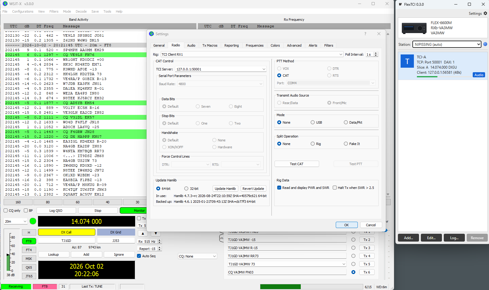
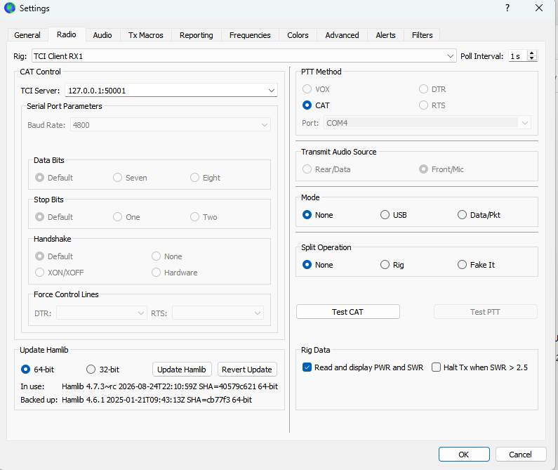
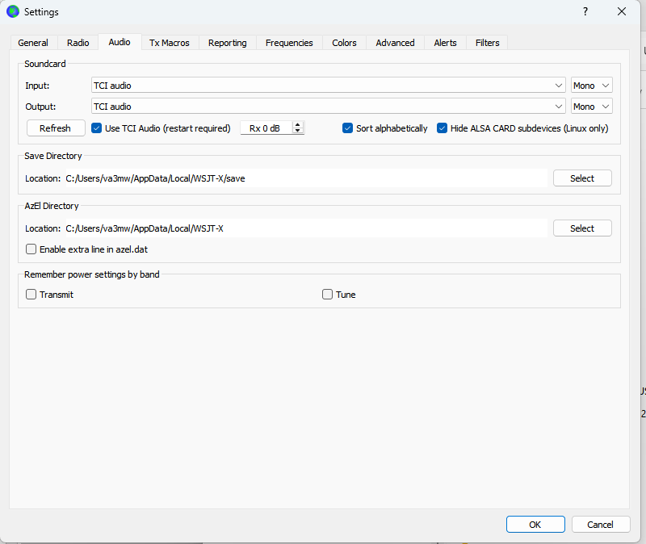

One connection instead of CAT + DAX.
A TCI server for FlexRadio on Windows. Point WSJT-X, JTDX or any TCI client at a localhost port and it controls a slice and gets its audio straight from the radio over the network. No serial ports, no virtual audio cables, and no SmartSDR DAX.
Version 0.6 · formerly FlexTCI · open source
TCI puts rig control and audio on a single WebSocket. SliceTCI speaks TCI to your programs on one side and the SmartSDR API and DAX streams to your FlexRadio on the other.
Slice A on port 50001 with DAX 1, Slice B on 50002 with DAX 2, and so on, up to eight. Each WSJT-X or JTDX instance gets its own slice. Several clients can share a port, for example WSJT-X and a logger, and they stay in sync.
Receive and transmit audio travel as DAX streams over the network, resampled to whatever the client asks for. SmartSDR DAX and the Windows DAX sound devices aren't needed. Each channel has its own RX level.
Only one client can transmit at a time. The radio unkeys if that client disconnects, crashes or stops sending audio. Transmit started in SmartSDR is never dropped by a client.
When a client transmits its own audio, a slice left in USB or LSB is switched to DIGU or DIGL, and TX DAX is turned on if it was off, so the audio reaches the transmitter. You can turn this off.
TCI spots from your client show on the SmartSDR panadapter and clear themselves after 15 minutes. Click one in SmartSDR and every TCI client is told. Your cluster and N1MM spots are left alone.
Filter by level or text, and optionally capture every TCI and radio API line. Each transmission logs a summary of how long it was keyed and how much audio arrived. Logs are kept daily.
Your programs only ever talk to localhost. SliceTCI keeps the one connection to the radio.
SmartSDR, or another GUI client, must be running because it owns the slices. In multiFLEX, SliceTCI binds to the station you choose, so "Slice A" means that station's Slice A.
Settings and logs live in %APPDATA%\SliceTCI.
Get SliceTCI-<version>.exe from the latest release and run it. Windows SmartScreen may ask once because the exe isn't code-signed: choose More info › Run anyway. Allow it through Windows Firewall, since the radio's audio arrives over UDP.
With SmartSDR running, choose your station. The default is one channel: Slice A on port 50001 with DAX 1. Add a channel for each extra slice you want to use.
Settings › Install in AppData moves the exe next to its settings and adds a desktop shortcut. Check for updates fetches a new release, verifies it, and restarts.
Two tabs in WSJT-X Settings. JTDX is the same idea.
127.0.0.1:50001 (the channel's port)

For a second slice, start another instance with wsjtx --rig-name=SliceB and point it at port 50002. WSJT-X currently handles at most two TCI clients at once, so plan on two WSJT-X instances at most.
TCI has no password, so SliceTCI keeps it local. TCI ports listen on localhost only, never on your network. Connections from web pages are refused, so a website you visit can't open your radio. Audio is accepted only from the radio's own address.
It works over a VPN or Tailscale too. The audio is UDP, which doesn't resend lost packets, so a poor link can mean fewer decodes or gaps in transmitted audio. A wired, low-latency connection gives the best results. SmartLink isn't supported yet.
Here's where it stands.
Phase 1 of the TCI requirements draft. Commands outside this list are ignored and logged once.
| Area | Commands |
|---|---|
| Start-up | protocol, device, trx_count, vfo_limits, modulations_list (from the radio's own mode list), full state, ready |
| Tuning | vfo, modulation, rx_filter_band, rit_*, xit_*; dds and if read-only |
| Transmit | trx (including TCI audio), tune, drive, tune_drive, tx_enable |
| Audio | 8, 12, 24 and 48 kHz; sample type, channels and block size as the client asks; TX_CHRONO pull model |
| Spots | spot, spot_delete, spot_clear in; clicked_on_spot out |
Go with Wails for the window. The interface is one plain HTML file, so there's no Node.js build step and no C compiler.
# tests, including end-to-end runs against a fake radio go test ./... # Windows exe in build\bin wails build